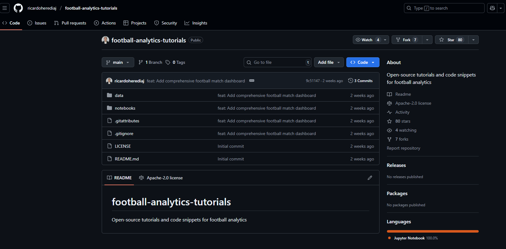
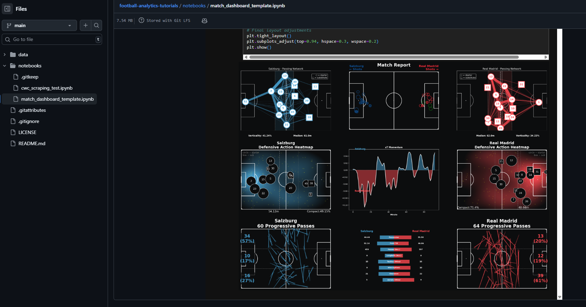
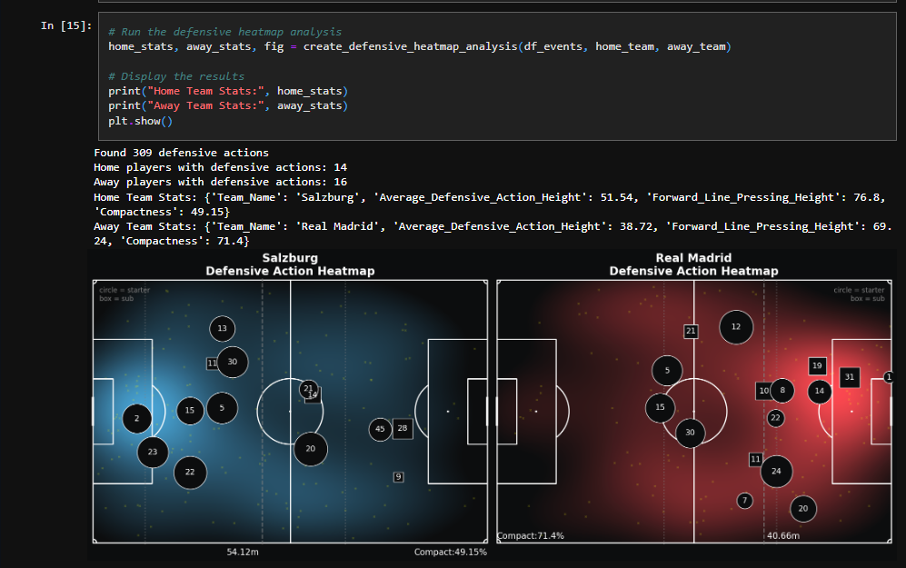

Future of AI in Football Scouting - Ricardo Heredia Joya
Hi all,
I am joined this week by Ricardo. Ricardo really impressed me with his post match reports. I had the pleasure of chatting to him on a video call last week to learn about his personal data science projects, the role AI will have in football and the opportunity for personal growth.
You can find similar concepts and themes below in our conversation below. Be sure to check out some of Ricardo's main sites:
Substackx (Twitter)GithubCJ: Ricardo, thank you for giving up time to share more on your journey with soccer analytics. What was your entry point into the world of data? It looks like you have had a background in sports health first?R: Thank you for the opportunity, CJ, I appreciate it! My background is from medicine, I graduated as a medical doctor in Venezuela and moved out to Spain to keep doing postgraduate studies here. While I was studying for the Spanish medical bar I had a temporary job as a sports physician.At the same time, I stumbled upon DataCamp Python course and decided to learn it cause it felt like a challenge and I was also yearning for learning a new digital skill. Got immediately hooked to that course and found out you could apply that to data analytics in sports, specifically in football, my favourite one. So, I made the decision to pivot towards data analysis and going all in. Then, a couple months after I finished a MOOC on Data Analytics with R, I contacted a data scientist that was working with football analytics on LinkedIn. I asked him for advice on where to find free data to start analyzing and to my surprise, he invited me to be part of a data science consultancy group remotely that collaborated with several professional clubs in the US and Europe. I said yes, and it became my first real world experience and entry point working with data in general.CJ: You often write on substack on where to access different resources for football data. Where should someone start if brand new?R: As a newbie I didn’t have a clue on where to start or where to look for. That’s why I wrote a post exactly about that, where I gathered the resources I used 3 years ago to start playing around with free data, what analyses you can make, where to get both the technical and domain knowledge to make the most out of football data. You’ll find free data sources, YouTube channels, online courses and many resources to start.CJ: The thing I loved most coming across your content was your Football Post Match report.

For those that are just getting into coding and soccer analytics. Could you talk a little about what the code does within the repo?

R: The code focuses on 4 things using Python:
Obtains free football event data from two popular webs like WhoScored (Opta data with coordinates) and Fotmob (for shots data). It obtains the data through a technique called web scraping, that if done responsibly can help you get the data you need to do any kind of analysis. The scraping code is at the beginning of this notebook.
Cleaning the scraped data and organizing it for analysis purposes, involving variable renaming, dealing with nulls, and storing the data in CSV and JSON format.
Calculations & Plotting: once the data is organized, and you have an idea of what you want to plot (Attacking and Defensive events like shots, progressive passes, the defensive block height, etc) there comes the logic that computes these variables and adapts them to the pitch dimensions. This is important because it helps you set the coordinates and the aesthetic (colours) of the pitch. Then I use Python functions to build each plot and convert them into subplots that would be part of the final match dashboard.
Match dashboard: all the subplots are grouped into the same layout giving you the overview of the match with the specific plots I decided to include, in this case only 6 cause I thought it would look less crowded.
A short summary: extracting data -> cleaning and organizing it -> calculations & plotting -> final match dashboard.When doing projects like this it helps break each part in smaller bits and build upon them.CJ: As someone that is familiar with matplotlib, when creating a dashboard template like this one. What are some of the easier things to do in terms of design and styling, and what parts of the dashboard take greater thought and consideration?R: In terms of design and styling the easiest part is looking at different pitch examples to inspire and create yours. For instance, you can go the mplsoccer web (https://mplsoccer.readthedocs.io/en/latest/) and look at the examples. You can also see in social media some of the work other people share and inspire from it to adapt it to your own style (always giving credit to your source of inspiration). For the dashboard, the hard part was the data scraping process, because you need to look at the layout of the webpage, where the tabs to get the data and variables you need are, what the output returns, etc. Thankfully I didn’t start from zero, got the opportunity to do the McKay Johns web scraping course a while ago and reimplemented most of the logic he taught there, but still, if you want to grab other variables you need to go over the process again by yourself.

After that, it gets a little less complicated since the mplsoccer and matplotlib documentation help a lot to understand how to build these plots. As a tip: if you combine your doubts, your context, along with the documentation, and you pack all that into a prompt for a LLM like GPT-5 or Claude, you’ll get extra valuable help like I did. For this project, I’ve been iterating with Claude Sonnet 4 to help me generate custom designs for the dashboard and to help me debug Fotmob web scraping errors (the web that was harder to scrape in my opinion). CJ: In your opinion, how will the role of a data scientist change within football over the next few years, and will AI change how people approach football analytics looking specifically at scouting?R: Like in most technology roles, the data scientist role is changing right now as we speak at a really fast pace in the industry, both in soft skills and technical skills. You’re no longer expected to only train a model inside a notebook and pass it to the ML engineers or software development team to deploy it, you’re expected to go a little further owning the end-to-end process by being a “full-stack” data scientist depending on the maturity of the organization you’re working for. If inside your organization there aren’t defined roles as data engineers, ML Engineers or developers, you might be expected to wear many hats and touch on several areas: extract structured and unstructured data from different sources, store it, clean it, manipulate it, and retrieve it whenever possible (data engineering), doing EDAs, training models, making experiments, hypotheses test, build web apps (data scientist), and deployment at a working level (MLE, SW). I would also add to the stack: having Generative AI literacy, since these technologies and solutions are helping developers solve problems that might have taken you days, but in minutes or a few hours. Besides that, you also need to improve or develop soft skills like communicating all your findings and results in simple terms, estimating development times, especially when you’re dealing with non-technical stakeholders and clients that need the easily digested information. In my humble opinion, this trend will go up since AI will help teams upskill and augment themselves (if they want to). It can be used to go one step further, helping you worry about the broader picture like: designing pipelines, end2end solutions, apps, strategies, and automated workflows, letting AI do the heavy lifting and scaffolding, always with you behind the wheel (this is important). Regarding scouting: yes, it will empower curious individuals (analysts, coaches, scouts, developers, etc) be it freelancers or within clubs, agencies, and scouting departments to build better and more profitable solutions for them. These opportunities will depend on the knowledge and budget of your organization. If you have a high budget you’ll have access to premium data and tools from top providers, and probably you’ll have the chance to have tailored AI solutions for your specific use case, that will give you an edge by helping you cover more leagues and players. On the other hand, if you’re on a tight budget you can also build your own custom solutions using open-source models and platforms to specialize in niche leagues and find great market opportunities for example, using it in other statements of clubs like youth academy development marketing departments, or any other use case you can come up with. The important thing will be developing an AI-first brain and combining that with your domain knowledge to solve problems you care about. CJ: Who are some others in the community that act as inspiration or are a great place to start when wanting to enter the industry in terms of upskilling in soccer analytics?R: I mention some of them in the Sub stack post of the 5 Actionable Actionable Tips and Resources but it is worth mentioning them again and some others, since they’ve helped me along the process:
McKay Johnsboth YouTube Channels and football analytics affordable courses.
Ben Griffis: Advanced visualizations, he shares free apps for scouting and has a Google sheet to watch free football matches from less popular but interesting leagues for scouting.
Liam Henshaw: he created a community to help you get in the football scouting industry.
Jesús Lagos (@Vdot_Spain on X/Twitter): he’s a scouting consultant with a long-term solid experience working with top clubs and agencies. He shares great content on how to use data for scouting, going beyond just aggregated and event data, but creating your own metrics to better understand football actions and scout players with more context.